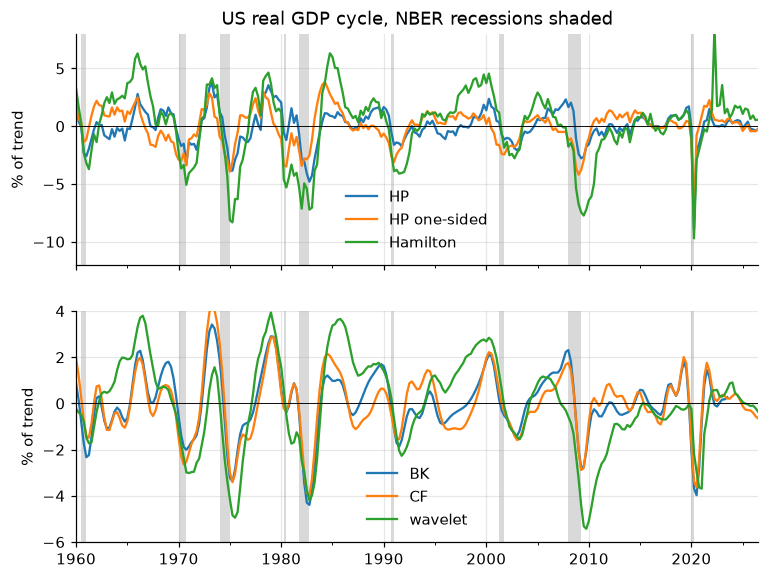

Economic Time Series in Python#
A practical handbook for economists who manipulate time series in Python:
the steps between downloading a series and estimating a model. Every chapter
is a notebook that runs as written on real data (a bundled snapshot of
FRED), and every recipe is also packaged in econts, a toolkit you can
install and import in your own projects.


📖 Chapters#
Chapters
- 1. Dates, periods and frequencies
- 2. Transformations: logs, growth rates, indices, deflators
- 3. Temporal aggregation: from high to low frequency
- 4. Interpolation and temporal disaggregation
- 5. Seasonal adjustment
- 6. Detrending and filtering: trend and cycle
- 7. Rolling windows, smoothing, lags and leads
- 8. Business cycles: turning points and stylized facts
- 9. Diagnostics: stationarity, autocorrelation, outliers
- 10. Crisis dummies and recession bands: Portugal
- 11. Paper-quality figures: impulse responses and decompositions
Reference
Each chapter ends with a Summary of its rules of thumb and a set of Exercises on the bundled data. The knowledge test checks the main ideas, and the cheat sheet gives one-line answers to the most common tasks.
🚀 Getting started#
Every chapter opens in Google Colab or nbviewer from the repository README; the first cell installs the toolkit when it runs on Colab.
To run the notebooks locally:
git clone https://github.com/hmorao95/econ-time-series-manual
cd econ-time-series-manual
uv sync # or: pip install -e ".[book]" jupyterlab
uv run --with jupyterlab jupyter lab notebooks
🧰 The econts toolkit#
The functions written out in the chapters are collected in a package, so a project can use them without copying code:
pip install git+https://github.com/hmorao95/econ-time-series-manual
import numpy as np
from econts import load
from econts.filters import hamilton_filter
from econts.disagg import denton
y = 100 * np.log(load("GDPC1"))
cycle, trend = hamilton_filter(y)
The toolkit page lists every function and the chapter that explains it.
📊 Data#
econts.load reads a snapshot of FRED series bundled with the package, so
the notebooks run offline and reproduce the numbers quoted in the text.
load(series_id, online=True) fetches the latest vintage of any FRED
series. Bundled: US real and nominal GDP, the GDP deflator, industrial
production, retail sales (adjusted and not), CPI, unemployment (adjusted and
not), payrolls, weekly jobless claims, daily Brent, the NBER recession
indicator, Portuguese GDP, unemployment and 10-year yield, and a quarterly
Portuguese recession chronology.
Conventions#
Series that grow are analysed in logs × 100, so differences are (approximately) percent changes.
Cells within a chapter run in order and share variables.
Every notebook is executed in CI with warnings treated as errors, so the code works with the pinned library versions.
Credits#
The structure of this book follows Filippo Maria Bianchi’s Time series analysis with Python. Several recipes port functions of Filippo Ferroni’s Empirical Macro Toolbox (MATLAB), and chapter 11 draws its figures with housestyle. Data: FRED, Federal Reserve Bank of St. Louis.